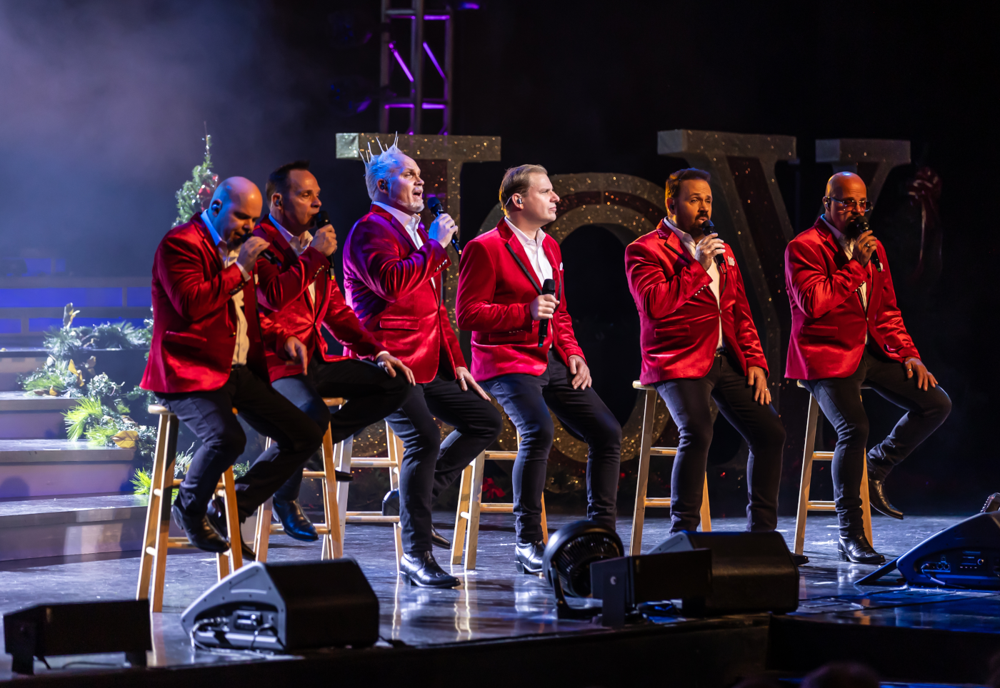
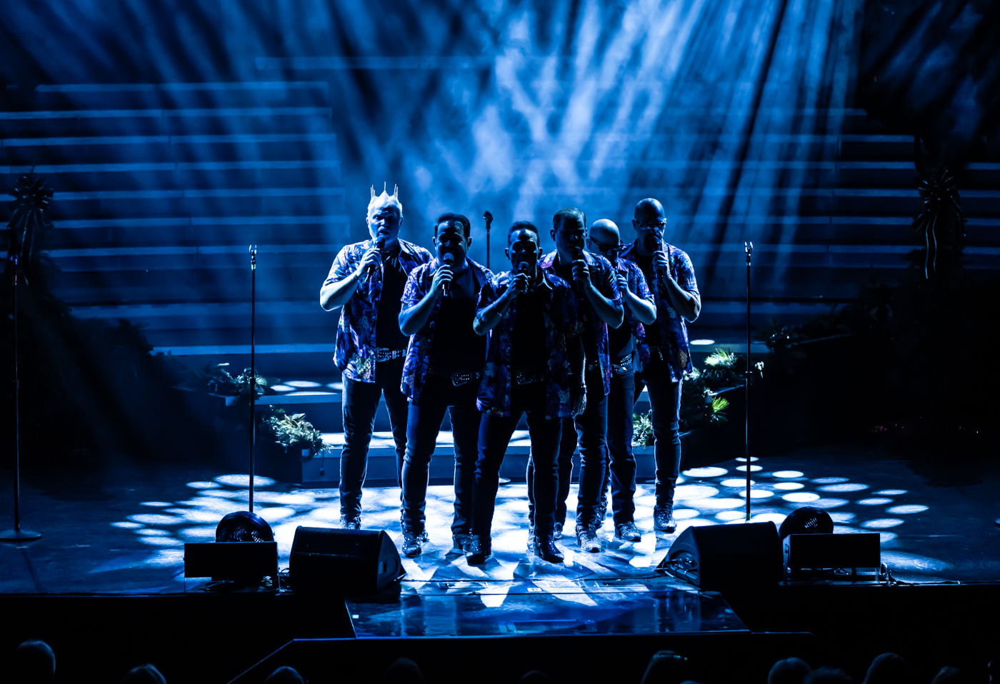
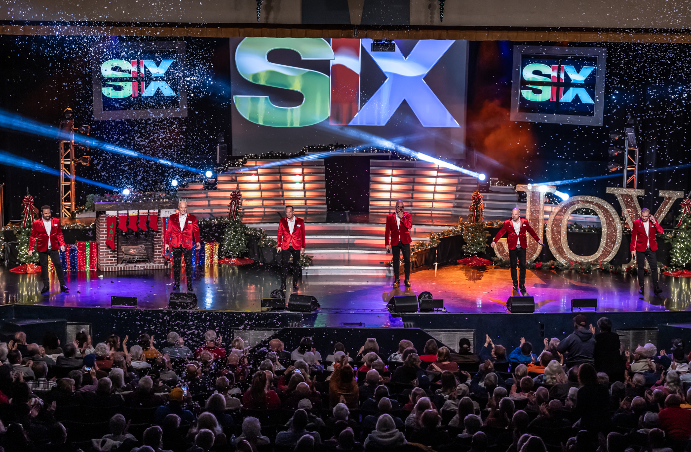
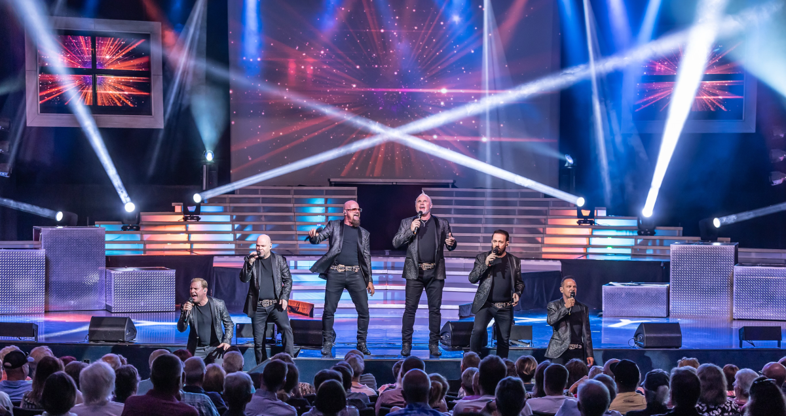
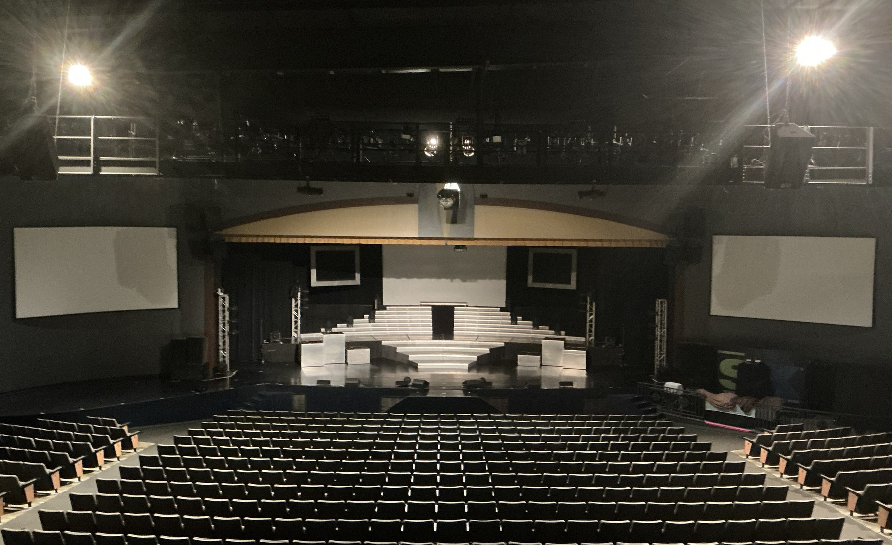
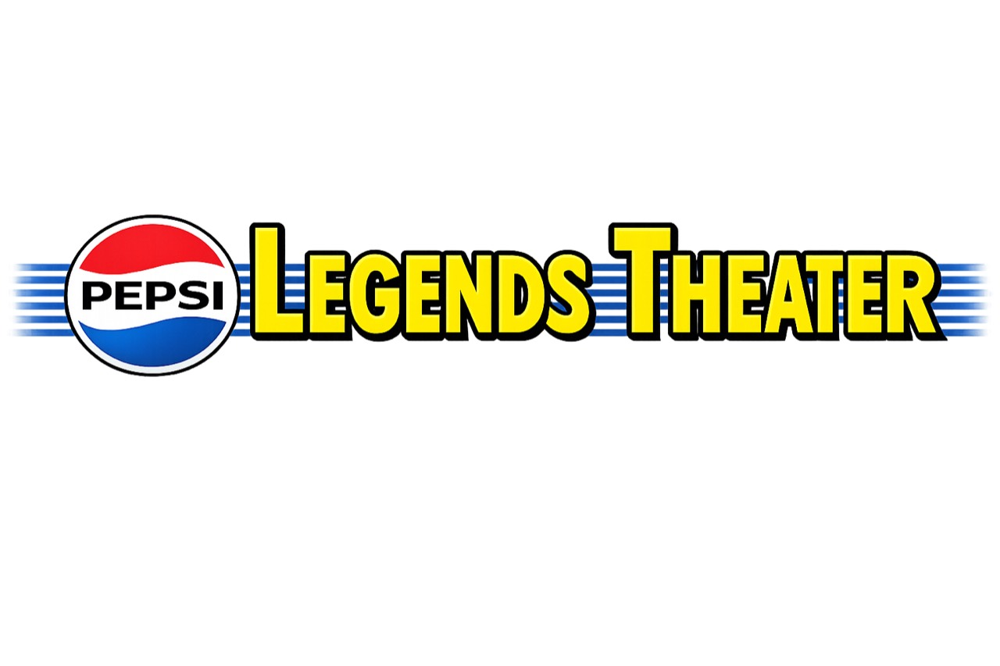

Music that feels enormous
Pop, rock, country, classics and unexpected favorites—reimagined through a six-voice sound that can shake a room or hush it completely.
Six real brothers · One full-band sound
SIX creates the sound of an entire band with six voices—then adds five decades of family chemistry, sharp brother comedy and the kind of live connection no recording can reproduce.
Pepsi Legends Theater · Branson, Missouri

The SIX experience
SIX builds rhythm, bass, melody, harmony and instrumental effects live with six voices.
Between songs, five decades of brotherhood become comedy nobody else could reproduce.
Pop, rock, country, classics and unexpected favorites—reimagined through a six-voice sound that can shake a room or hush it completely.
The discovery is part of the fun: what sounds like a full rhythm section is happening live, right in front of you, without instruments.
The harmonies are tight. The family boundaries are negotiable. SIX is polished entertainment with a genuinely human pulse.
Beneath the spectacle is a family story that can turn a room from laughter to complete silence.
How the sound is built
Six distinct parts lock together in real time. A beat becomes a groove. A bass line becomes momentum. Harmonies stack until the whole room feels the sound.
The current SIX
Barry, Kevin, Lynn, Jak, Owen and Charles carry the SIX sound and story forward together today.




More than a concert
The music surprises you. The chemistry pulls you in. The story stays with you.
A Branson original since 2006
Branson’s live-show roots were built on country, bluegrass and gospel. SIX arrived in fall 2006 with a contemporary vocal-band sound spanning pop, R&B, rock ’n’ roll, doo-wop, country, gospel and patriotic music—all without instruments.
Our story
Seven brothers have shaped SIX across different eras and configurations. Today, Barry, Kevin, Lynn, Jak, Owen and Charles bring that history onto the stage together.
Long before the lights of Branson, the brothers began learning how separate voices could become one unmistakable sound.
A contemporary, genre-spanning vocal band brings a different kind of live experience to a city long known for country, bluegrass and gospel.
The legacy remains visible, but the public story moves forward with the current six and a digital presence built for what comes next.
Tickets & schedule
Choose a performance, find trusted ticket information and know exactly what happens next. Live dates, prices and availability will connect only through the approved ticket source.
A clear, mobile-friendly schedule replaces uncertainty with an easy first decision.
Every ticket button follows one authoritative path—no competing destinations or dead ends.
Confirmation, directions and visit details make the handoff feel intentional all the way to showtime.
Final ticket seller and live schedule connection require leadership confirmation.
Guest reactions
Independent guest reviews say what advertising cannot. These short excerpts link directly to the places they were published.
Read on TripadvisorThe harmonies and energy were incredible from start to finish.
Read on ViatorGreat music! Fantastic energy! Full of laughter!
Read Google reviewsTheir voices were fabulous, and the energy they exuded was infectious!
Groups in Branson
Motorcoach tours, reunions, student groups, churches and organizations deserve a clear route to planning a memorable SIX experience.
Outside bookings
Presenters, corporate events and special engagements need a distinct professional path—not a generic contact form.
Plan your visit
Venue details, arrival guidance and ticket support belong in one calm, confidence-building place.

Performance time, ticket confirmation and current venue guidance.
Directions, parking notes and an obvious map handoff.
Accessibility, arrival timing and practical guest questions.
Good questions
The musical performance is built vocally—rhythm, bass, melody, harmony and instrumental effects—supported by the show’s theatrical video, lighting and production elements.
It is a two-act vocal-band experience built from music, live sound, family chemistry, heart and naturally occurring brother comedy.
The musical range and family connection are designed to give multiple generations something to recognize, enjoy and talk about afterward.
SIX performs at Pepsi Legends Theater, 1600 W 76 Country Blvd in Branson, Missouri. Live dates will be connected to the approved ticket calendar.
One unforgettable night